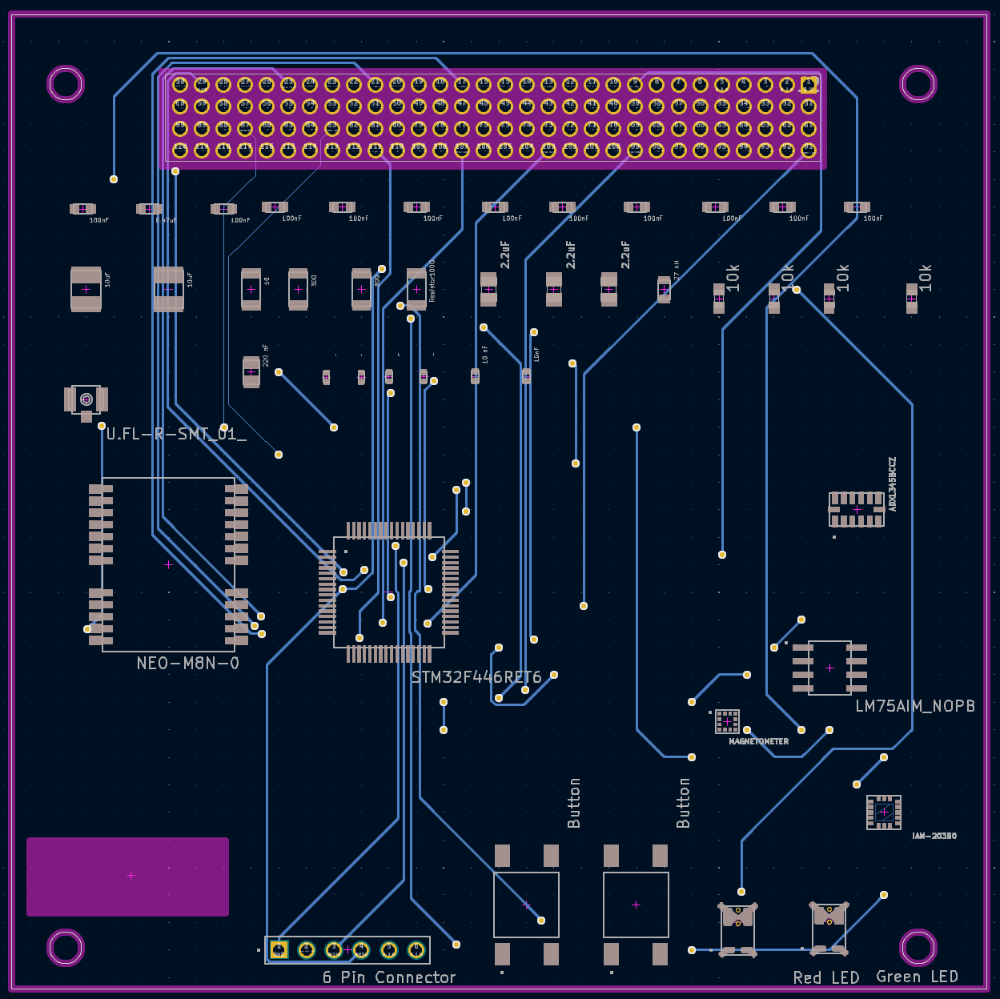
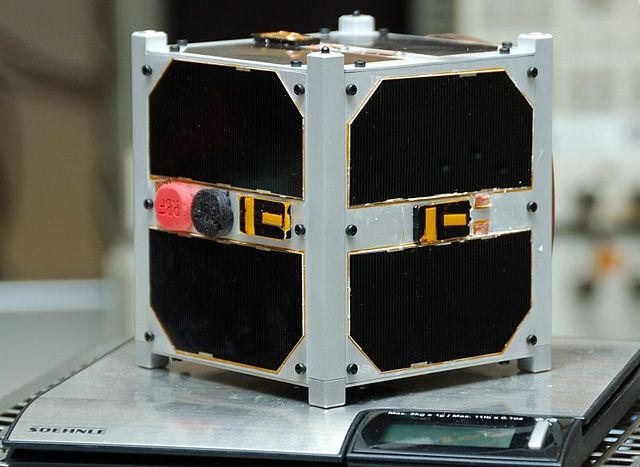
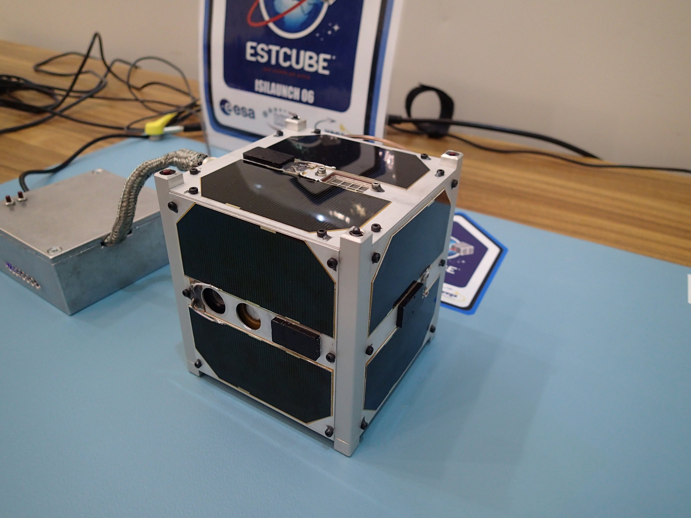
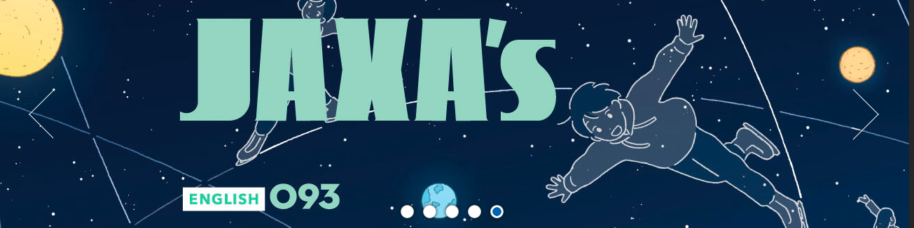

Aprende las bases de la teoria y fisica Espacial, Electronica, diseño de Prototipos
y arquitectura de computadoras, aventurandote en este emocionante proyecto real.
Construye a tu propio ritmo
Sin problemas en un curso totalmente gratuito
Hemos traducido temas de física e ingeniería a un lenguaje sencillo.
Creado con una línea de aprendizaje sencilla y comprensible.
Documentación disponible en múltiples idiomas y lenguas originarias.



Este proyecto Satelital es la mejor herramienta para poder aprender sobre multiples disciplinas.
Sabemos que adentrarse en el mundo espacial puede parecer complejo y costoso, pero este proyecto ha
sido cuidadosamente diseñado para evitarlo.
Usamos componentes económicos, fáciles de conseguir y ampliamente documentados.
Aquí, no necesitas
grandes laboratorios ni inversiones altas: solo curiosidad, ganas de aprender y una guía que te
acompañará paso a paso.
Diseñado para ser usado y comprendido por estudiantes y docentes, con medios que pueden ser
integrados en multiples planificaciones pedagogicas.
Hecho con materiales económicos
Elaborado con elementos de facil acceso y bajo costo para ser elaborado en cualquier institucion sin
perjudicar su presupuesto
No necesitas experiencia previa
Documentado completamente para no depender de bases de conocimiento amplias para empezar. Diseñado
para enseñar y crear esa experiencia a traves de la practica.
Compatible con entornos educativos
Dispone de muchos medios y elementos que pueden ser usados en clase para enseñar sobre puntos
especificos de las multiples disciplinas del proyecto.

El objetivo de este proyecto es formar una base sólida en conceptos espaciales y electrónicos,
culminando en la creación de un prototipo de satelite tipo CubeSat educativo. Una herramienta
pensada para enseñar haciendo y para inspirar nuevas generaciones de exploradores
tecnológicos.
Desarrolladores
Boyd Robert Mallqui Rodriguez
Diseño, documentacion y Sistemas de Embebidos
Pablo Sebastian Gutierrez Vega
Programacion de los sistemas computacionales
Carlos Nicolas Prieto Fretel
desarrollo de placas de circuitos y modelado en 3d